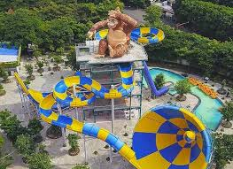

Kenapa Harus Kesini?

Pantai Indah
Nikmati suasana pantai yang menenangkan dan cocok untuk keluarga.

Wahana Seru
Atlantis Land & waterpark penuh keseruan untuk semua umur.
Spot Budaya
Pagoda Tian Ti, Patung Dewi Kwan Im, dan ikon budaya lainnya.
Kuliner & Oleh-oleh
Jelajahi kuliner khas Surabaya dan kios oleh-oleh unik.